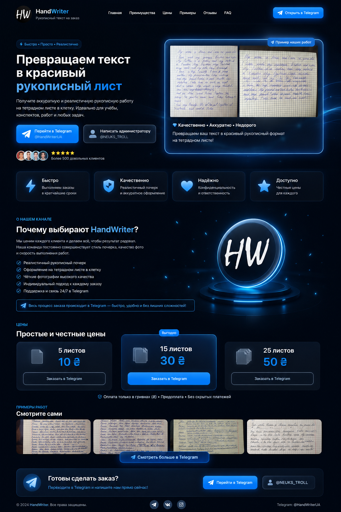

Реалистичный почерк, аккуратное оформление и быстрый результат.

листов за минимальный заказ
быстрое выполнение
тетрадный стиль
Текст выглядит так, словно его действительно написали вручную.
Отправляете текст — получаете готовый результат максимально оперативно.
Весь заказ оформляется через Telegram без сложных действий.
Классическое оформление делает работу естественной.
Очень аккуратное оформление.
Удобно заказать через Telegram.
Красивый рукописный стиль.
HandWriter — это Telegram-канал, посвящённый созданию красивого рукописного оформления текста. Мы стараемся сделать процесс максимально удобным: достаточно отправить текст, после чего можно получить готовый результат в стиле рукописной записи на тетрадном листе.
Мы уделяем внимание внешнему виду каждой работы, чтобы итог выглядел естественно, аккуратно и приятно. Такой формат отлично смотрится на классических тетрадных листах и сохраняет привычную атмосферу настоящей записи от руки.
Мы постоянно развиваем канал, публикуем примеры выполненных работ, показываем оформление и стараемся сделать взаимодействие максимально простым. Нам важно, чтобы заказ можно было оформить без лишних сложностей и получить понятную обратную связь.
Если вы хотите увидеть больше примеров оформления, узнать актуальную информацию или связаться напрямую — заходите в наш Telegram. Там собраны примеры работ, описание услуг и возможность быстро написать администратору.
По вопросам: @NEUKS_TROLL